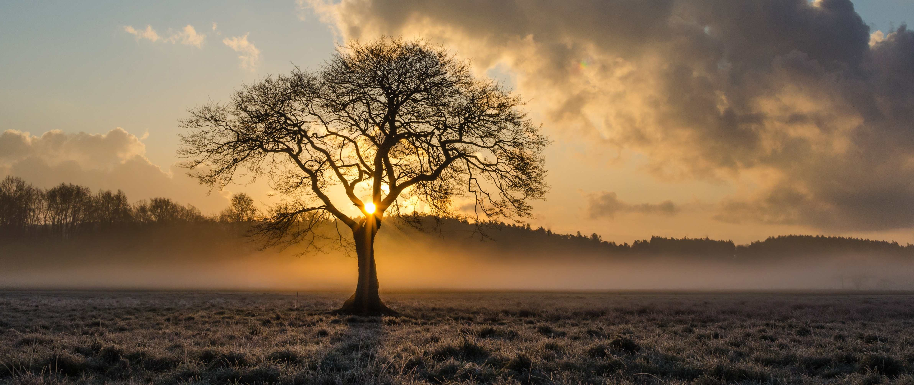

...
Jaké stromy u nás rostou
Chcete vědět, kde je nejstarší lípa nebo letitý buk?
Jak na to
- Vytvořte si bezplatný účet
- Přidávejte, editujte a odstraňujte stromy
- Sledujte, co všechno jste již zvládli dokončit